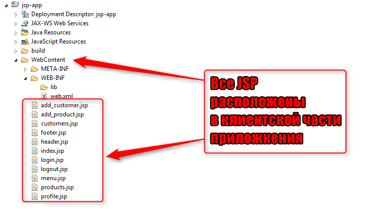

Итак, в кратком описании, мы выяснили, что ваши JSP расположены, в клиентской части приложения. То есть, структура вашего приложения может выглядеть, например, вот так:
Причин, по которым вы читаете текст этой ошибки, всего две, и, раз вы приступили к выполнению заданий по теме JSP, то эти причины уже должны быть вам хорошо известны.
Первая причина заключается в том, что
Все элементы клиентской части доступны по прямым URL-ам
Это означает, что в приложении, которое приведено на рисунке выше, пользователь спокойно может ввести URL-ы типа:
и получить доступ к любой странице.
Что, естественно, является неверным, потому что у вашего приложения есть бизнес логика, которая определяет, какие страницы, и в каком порядке могут видеть ваши пользователи.
А вторая причина — это сама суть JSP-страницы.
Не забывайте, что на любой JSP можно использовать 4 вида скриплетов. По другому (человеческими словами) это можно сказать так:
В любой JSP-странице можно писать Java-код!
А что такое Java-код? Правильно — это бизнес-процессы вашего приложения! Это:
И многие-многие другие, о-о-о-о-чень секретные и ответственные мероприятия!
Следовательно, если приложение предполагает, например, что манипуляции с финансовыми средствами пользователей возможны только после успешной аутентификации этих пользователей в системе, и для этого приложение предлагает вначале посетить страницу по адресу:
А пользователь, вместо этого сразу вводит URL типа:
тем самым, как бы намекая вам и вашему приложению, что все ваши предложения он вертел на морском буйке,
то, согласитесь, — это не очень защищенное приложение
Да, здесь можно возражать, что сама страница manipulate-with-my-money.jsp должна быть написана качественно,
и не позволять пользователю проводить никаких финансовых манипуляций, пока он не войдет в систему.
И, конечно, JSP будет написана именно так.
Ведь это Java-проект, а они всегда написаны качественно!
Но именно в тот момент, когда мы употребляем слово качество
, мы думаем —
А почему бы к хорошо написанным JSP-страницам не добавить еще одну степень защиты?
А именно:
Cпрятать эти страницы от глаз и рук пользователей?
Это как в жизни — даже если вы живете в богатом доме, который очень хорошо охраняется, даже если в сейфе вашего дома всегда в полной готовности дежурит заряженный карабин, а по двору вальяжно прогуливается пара питбулей, в любой момент, готовых прийти вам на помощь и встать на вашу защиту....
Так вот, даже если у вас есть все это, и не только это...
То все равно, когда вы приходите к себе домой, вы закрываете за собой калитку, а потом — и входную дверь на ключ закрываете.
Просто потому, что лучше, когда карабин так и остается лежать в сейфе, пусть и заряженный
Итак, переходим к выводам.
В некоторых задачах по JSP есть специальное требование, по которому вы должны положить JSP-страницы в клиентскую часть.
Это сделано для того, чтобы вы просто потренировались и увидели — да, так можно делать
.
Во всех остальных случаях мы используем простое правило:
Все JSP страницы должны располагаться в серверной части приложения!
То есть — в каталоге WEB-INF.
Тогда правильная структура нашего приложения будет вот такой:
Тут же, глядя на этот рисунок, отметьте для себя, что в клиентской части мы все таки оставили одну страницу — index.jsp.
Но, как вы знаете, это — индексная страница.
Более того, вы знаете, что индексная страница:
forward на одну из страниц (или сервлетов) вашей серверной частиСледовательно, в отношении индексной страницы, ничего не изменилось — она по прежнему может (и должна!) располагаться в клиентской части приложения.
Ну а больше по этому вопросу мне вам и нечего сказать...
Разве что, позвольте дать вам еще один совет.
Пожалуйста, будьте осторожны с этой ошибкой.
Выше вы видели фразу — правильная структура приложения...
.
Так вот, этой фразой я вам лгу, и намеренно провоцирую вас на следующую ошибку.
Подумайте, как не попасться на эту ложь.
А значит, подумайте — какой же должна быть правильная структура
вашего приложения?